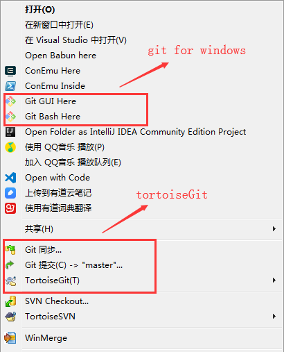
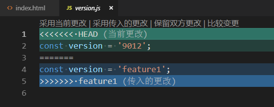
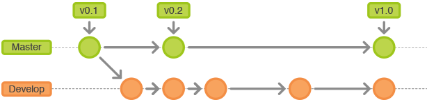
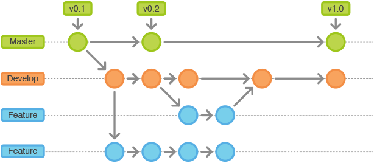
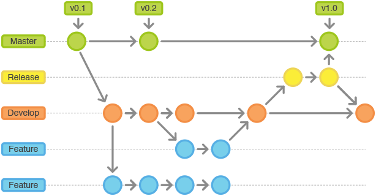

git实战简介
2019.5
by 朱雨薇
目录
- git简介&安装
- git常用命令和基础操作
- git项目实战技巧
简介
- Git 是一个开源的分布式版本控制系统，用于敏捷高效地处理任何或小或大的项目。
- Git 是 Linus Torvalds （Linux内核发明人）为了帮助管理 Linux 内核开发而开发的一个开源版本控制软件。
- Git 与常用的版本控制工具 CVS、Subversion 等不同，它采用了分布式版本库的方式，不需要服务器端软件支持
Git 与 SVN 区别


git工作原理

git工作原理
- Remote
远程仓库，就是类似github，coding等网站所提供的仓库 - Repository
仓库区（或本地仓库），执行git push origin master提交到远程仓库，执行git clone地址将克隆远程仓库到本地 - Index
暂存区，执行git commit -m '注释说明'命令就把改动提交到了仓库区（当前分支） - Workspace
工作区，执行git add *命令就把改动提交到了暂存区，执行git pull命令将远程仓库的数据拉到当前分支并合并，执行git checkout [branch-name]切换分支
git术语定义
| 术语 | 定义 |
|---|---|
| 仓库（Repository） | 一个仓库包括了所有的版本信息、所有的分支和标记信息。在Git中仓库的每份拷贝都是完整的。仓库让你可以从中取得你的工作副本。 |
| 分支（Branches） | 一个分支意味着一个独立的、拥有自己历史信息的代码线（code line）。你可以从已有的代码中生成一个新的分支，这个分支与剩余的分支完独立。默认的分支往往是叫master。 |
| 标签（Tags） | 一个标签指的是某个分支某个特定时间点的状态。通过标签，可以很方便的切换到标记时的状态，例如2019年1月25号在test分支上的代码状态 |
| 提交（Commit） | 提交代码后，仓库会创建一个新的版本。这个版本可以在后续被重新获得。每次提交都包括作者和提交者，作者和提交者可以是不同的人 |
| 修订版本（Revision） | 用来表示代码的一个版本状态。Git通过用 SHA1 安全哈希算法表示的id来标识不同的版本。每一个 SHA1 id都是160位长，16进制标识的字符。最新的版本可以通过HEAD来获取。之前的本可以通过"HEAD~1"来获取，以此类推。 |
基本配置
.gitignore
# 忽略某文件
npm-debug.log
# 忽略文件夹
dist/
node_modules/
.idea/ .gitkeep 文件
- Git会自动忽略空的文件夹。
- 如果想让版本控制包括空文件夹，根据惯例会在空文件夹下放置
.gitkeep文件。 - 其实对文件名没有特定的要求，一旦一个空文件夹下有文件后，这个文件夹就会在版本控制范围内。
用户信息配置
# 显示当前的Git配置
$ git config --list
# 编辑Git配置文件，只是配置用户信息的话直接看下面两行命令即可
$ git config -e [--global]
# 设置提交代码时的用户信息，是否加上全局--global自行决定，一般是直接设置全局的。
# 另外用户邮箱需要注意需要和你远程仓库保持一致，不然提交贡献是不会被记录在远程仓库的
$ git config [--global] user.name "[name]"
$ git config [--global] user.email "[email address]"
安装
windows平台安装2个软件
windows目录点击右键

git常用命令
创建仓库
# 在当前目录新建一个Git代码库
$ git init
# 新建一个目录，将其初始化为Git代码库
$ git init [project-name]
# 下载一个项目和它的整个代码历史（各个分支提交记录等）
$ git clone [url]
添加文件
# 添加指定文件到暂存区
$ git add [file1] [file2] ...
# 添加指定目录到暂存区，包括子目录
$ git add [dir]
# 添加当前目录的所有文件到暂存区
$ git add *
# 添加每个变化前，都会要求确认
# 对于同一个文件的多处变化，可以实现分次提交
$ git add -p
删除/更改文件
# 删除工作区文件，并且将这次删除放入暂存区
$ git rm [file1] [file2] ...
# 停止追踪指定文件，但该文件会保留在工作区
$ git rm --cached [file]
# 改名文件，并且将这个改名放入暂存区
$ git mv [file-original] [file-renamed]
提交到仓库区
# 提交暂存区到仓库区
$ git commit -m [message]
# 提交暂存区的指定文件到仓库区
$ git commit [file1] [file2] ... -m [message]
# 提交工作区自上次commit之后的变化，直接到仓库区
$ git commit -a
# 提交时显示所有diff信息
$ git commit -v
# 使用一次新的commit，替代上一次提交
# 如果代码没有任何新变化，则用来改写上一次commit的提交信息
$ git commit --amend -m [message]
# 重做上一次commit，并包括指定文件的新变化
$ git commit --amend [file1] [file2] ...
同步远程仓库
# 提交更改到远程仓库
# 参数加上 -u 表示指定分支与上游建立追踪关系
$ git push -u origin master
$ git push origin master
# 拉取远程更改到本地仓库默认自动合并
$ git pull origin master
查看日志
# 显示当前分支的版本历史
$ git log
# 显示commit历史，以及每次commit发生变更的文件
$ git log --stat
# 搜索提交历史，根据关键词
$ git log -S [keyword]
# 显示某个commit之后的所有变动，每个commit占据一行
$ git log [tag] HEAD --pretty=format:%s
# 显示某个commit之后的所有变动，其"提交说明"必须符合搜索条件
$ git log [tag] HEAD --grep feature
# 显示某个文件的版本历史，包括文件改名
$ git log --follow [file]
$ git whatchanged [file]
# 显示指定文件相关的每一次diff
$ git log -p [file]
# 显示过去5次提交
$ git log -5 --pretty --oneline
# 显示所有提交过的用户，按提交次数排序
$ git shortlog -sn
# 显示指定文件是什么人在什么时间修改过
$ git blame [file]
分支
Git鼓励大量使用分支
- 查看分支：
git branch - 创建分支：
git branch [name] - 切换分支：
git checkout [name] - 创建+切换分支：
git checkout -b [name] - 合并某分支到当前分支：
git merge [name] - 删除分支：
git branch -d [name] - 删除远程分支：
git push origin --delete [name]git branch -dr [remote/branch]
创建与合并分支的原理
HEAD 指向 master 分支

创建 dev 分支，HEAD 指向 dev 分支

$ git checkout -b dev
Switched to a new branch 'dev'
$ git branch
* dev
master
在 dev 分支上对工作区修改和提交， master 分支不变

$ git add *
$ git commit -m "branch test"
[dev b17d20e] branch test
1 file changed, 1 insertion(+)
切换回 master 分支

$ git checkout master
Switched to branch 'master'
将 master 指向 dev 的当前提交，完成合并

$ git merge dev
Updating d46f35e..b17d20e
Fast-forward
readme.md | 1 +
1 file changed, 1 insertion(+)
Fast-forward: 快进模式
合并完成删除 dev 分支，剩下一条 master 分支

$ git branch -d dev
Deleted branch dev (was b17d20e).
分支
因为创建、合并和删除分支非常快，所以Git鼓励你使用分支完成某个任务，合并后再删掉分支，这和直接在 master 分支上工作效果是一样的，但过程更安全。
标签
标签的作用主要是用来做版本回退的。
建议在每次项目发版完成后发布一个标签，以便基于此 tag 快速建立新分支。
常用命令
# 列出所有tag
$ git tag
# 新建一个tag在当前commit
$ git tag [tagName]
# 新建一个tag在指定commit
$ git tag [tagName] [commit]
# 删除本地tag
$ git tag -d [tagName]
# 删除远程tag
$ git push origin :refs/tags/[tagName]
# 查看tag信息
$ git show [tagName]
# 提交指定tag
$ git push [remote] [tagName]
# 提交所有tag
$ git push [remote] --tags
# 新建一个分支，指向某个tag
$ git checkout -b [branch] [tagName]
代码回退
给你一个吃后悔药的机会
git checkout
还原工作区的修改内容，只对本地工作区产生影响
# 恢复暂存区的指定文件到工作区
$ git checkout [file]
# 恢复某个commit的指定文件到暂存区和工作区
$ git checkout [commit] [file]
# 恢复暂存区的所有文件到工作区
$ git checkout .
git reset
强制回退版本，将HEAD指向改变为之前存在的某个版本
# 回退到上一个版本，在Git中，用HEAD表示当前版本
$ git reset --hard HEAD^
# 重置暂存区的指定文件，与上一次commit保持一致，但工作区不变
$ git reset [file]
# 重置暂存区与工作区，与上一次commit保持一致
$ git reset --hard
# 重置当前分支的指针为指定commit，同时重置暂存区，但工作区不变
$ git reset [commit]
# 重置当前分支的HEAD为指定commit，同时重置暂存区和工作区，与指定commit一致
$ git reset --hard [commit]
注意：使用 git reset 强制回退后目标版本之后的提交记录将全部消失。如果想回退到指定版本并保留该版本之后的修订版本记录，则使用命令 git revert
回退完成后使用 git push -f 命令强制推送到远程仓库。
git reset 和 git checkout 的操作区域

项目实战技巧
多人协作
多人协作的工作模式通常是这样：
- 首先，可以试图用
git push origin <branch-name>推送自己的修改； - 如果推送失败，则因为远程分支比你的本地更新，需要先用
git pull试图合并； - 如果合并有冲突，则解决冲突，并在本地提交；
- 没有冲突或者解决掉冲突后，再用
git push origin <branch-name>推送就能成功
如果 git pull 提示 no tracking information ，则说明本地分支和远程分支的链接关系没有创建，用命令 git branch --set-upstream-to <branch-name> origin/<branch-name> 。
合并分支时解决冲突

如果主分支 master 和 feature 分支都有新的提交，这种情况下，将 feature 分支合并到 master 时无法执行 Fast-forward （快进模式合并），则可能会提示有文件冲突
执行 git merge branch-name 时，git先尝试自动合并更改，如果两个分支修改了同一个文件，可能会提示文件冲突。
$ git merge feature1
Auto-merging version.js
CONFLICT (content): Merge conflict in version.js
Automatic merge failed; fix conflicts and then commit the result.
查看提示的冲突文件，Git在文件中用 <<<<<<<，=======，>>>>>>> 标记出不同分支的内容

修改冲突文件后保存，再提交一次。此时完成分支合并。
$ git add version.js
$ git commit -m "conflict fixed"
[master cf810e4] conflict fixed
最后执行 git branch -d feature1 删除 feature1 分支
Ps. 使用 git log --graph 命令可以看到分支合并图

引申：gitflow工作流程
可以理解为工作中团队成员共同遵守的一种git代码管理规范
gitflow命名约定
- 主分支命名：
master - 主开发分支命名：
develop - 标签命名： v*.RELEASE，其中 * 为版本号，RELEASE 大写，如：
v1.0.0.RELEASE - 新功能开发分支命名：
feature-* - 发布分支命名：
release-* - bug修复分支命名：
hotfix-*
gitflow工作流程模型
主分支 master 和开发分支 develop

初始项目，默认创建 master 分支和一个 develop 分支
功能分支 feature

从develop拉取feature分支进行编码开发。多个开发人员拉取多个feature同时进行并行开发 , 互不影响。
发布分支 release

从develop拉取release分支进行提测 , 提测过程中在release分支上修改BUG
维护分支 hotfix

上线之后若发现线上BUG , 从master拉取hotfix分支进行BUG修改
git-flow 主要提供命令行工具，适用于熟悉终端命令操作的开发者。
windows中安装方式参考这篇文章。
另外有支持Git Flow的图形化工具 Sourcetree
- END -
Thanks!